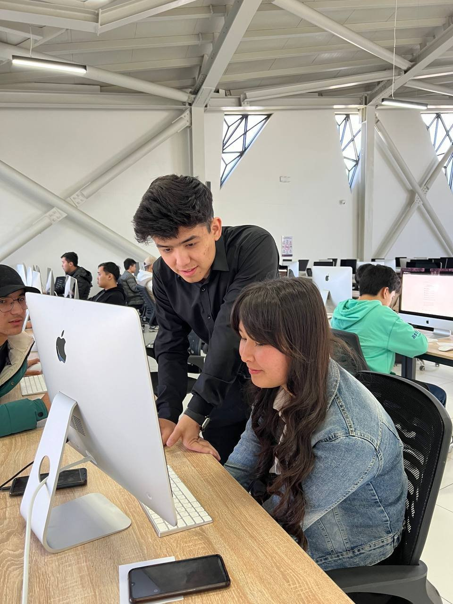

Mentoring my first 30 students

In autumn 2023 I went back to Astrum as a backend mentor. A few weeks earlier I had been a student there, and now I was the one standing behind the chairs in the iMac lab, looking at somebody else's screen. My group had 30+ students.
What we worked on
The backend course had to start from the basics, so the first weeks went into C and C++ memory, Python fundamentals and Git. I also built small tools and ran live demos, because people stay interested when they see their own code do something real. By the end about 20% more of the group finished the course, and engagement was up by around 40%.
Code reviews
I did 50+ code reviews. I was strict on purpose, but I tried to be kind about it. A good review tells you exactly what to fix and why, and I learned more from writing those comments than I expected to.
What I got out of it
You can't explain something you only half understand. Students asked questions I had never asked myself, and some evenings I had to go and learn the answer before the next class. That's the reason I kept teaching afterwards.